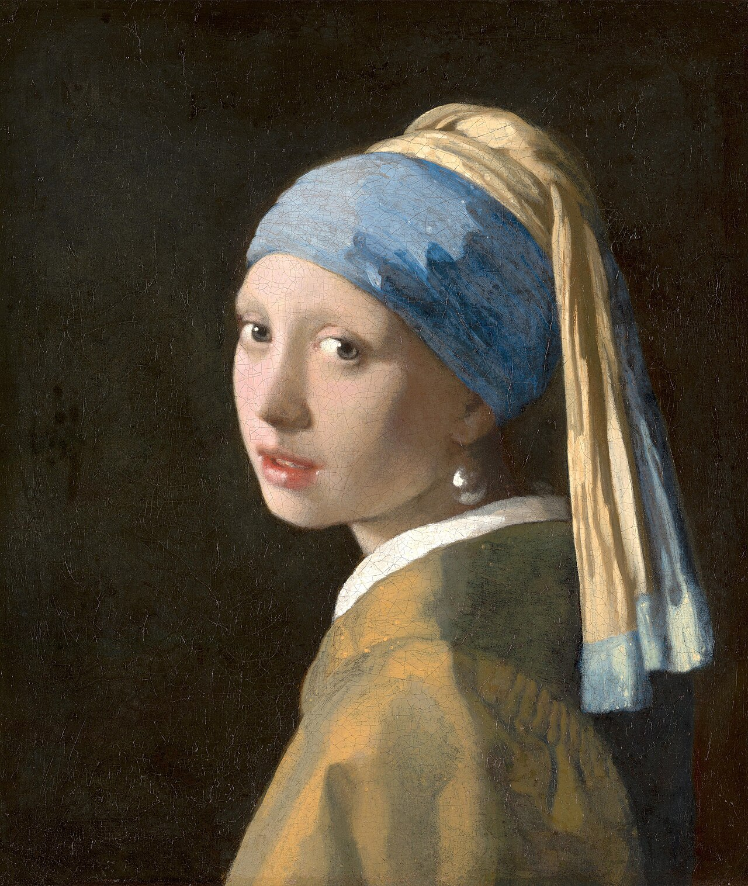

Galerii

Johannes Vermeer,
"Tütarlaps pärlkõrvarõngaga"
Rembrandt van Rijn,
"Doktor Tulpi anatoomialoeng"
Johannes Vermeer,
"Tütarlaps pärlkõrvarõngaga"
Rembrandt van Rijn,
"Doktor Tulpi anatoomialoeng"